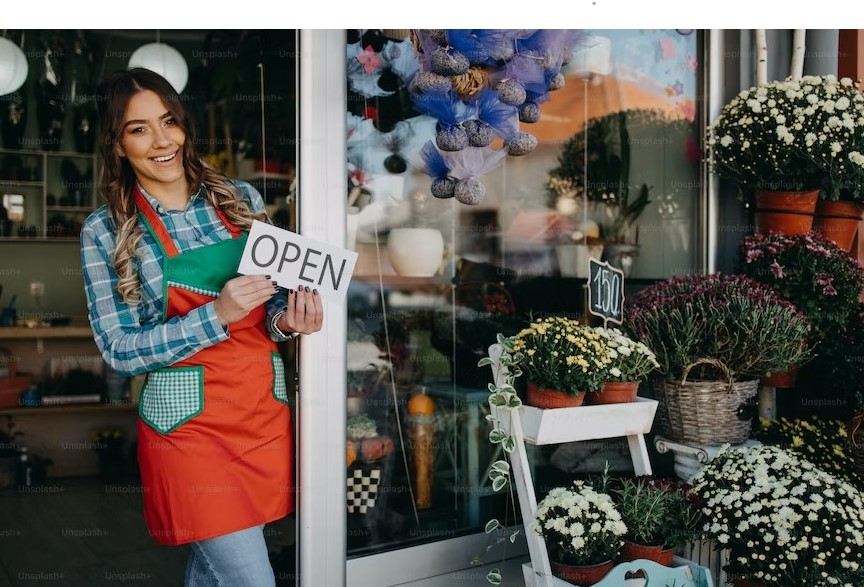
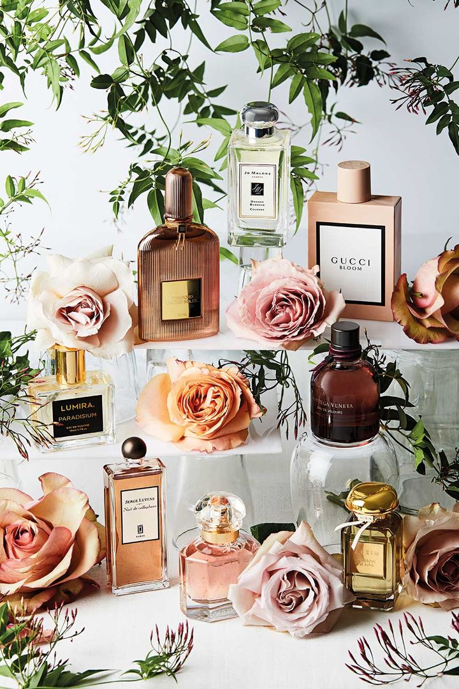
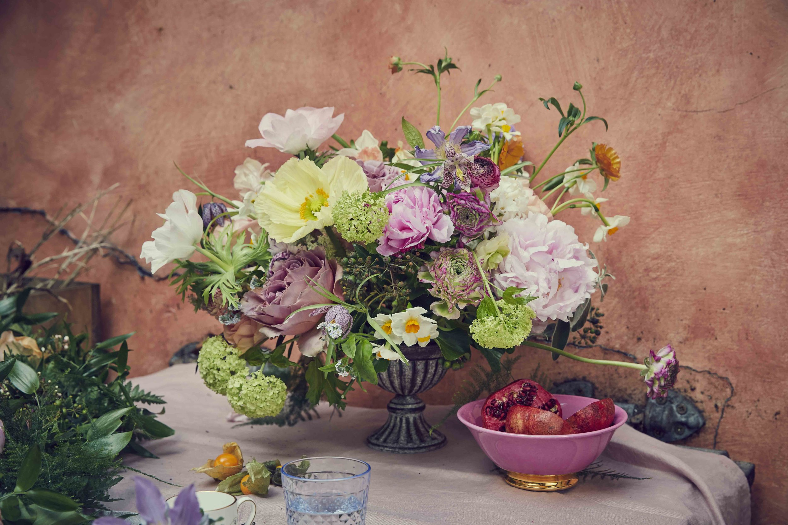
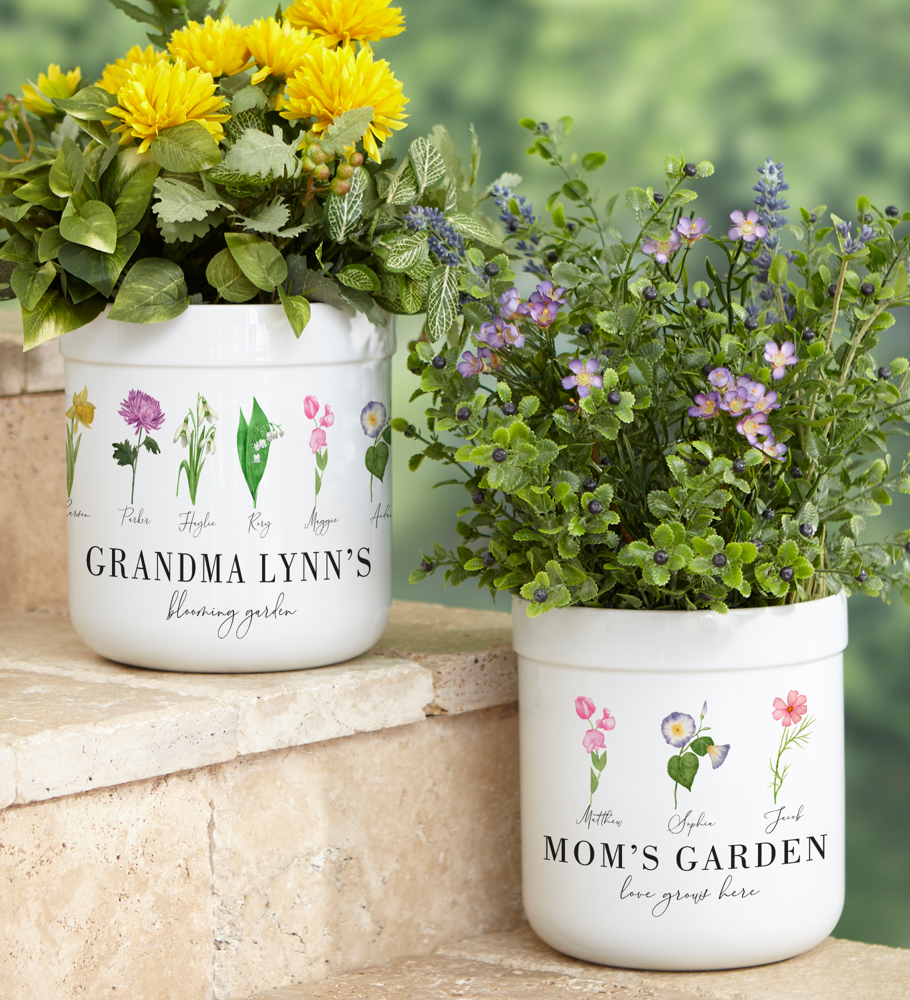
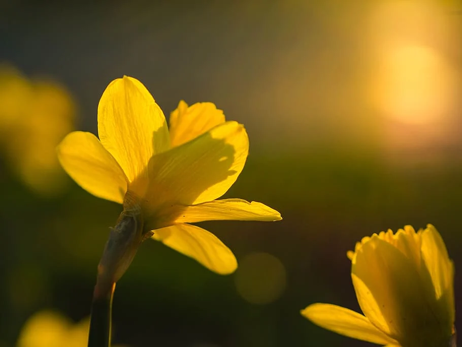
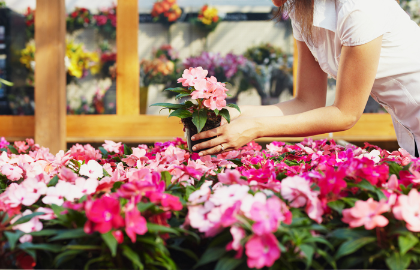

Embracing Nature's Magic: Blooms and Potion Flower Shop
Introduction:
Welcome to the enchanting world of Blooms and Potion! In this blog post, we invite you to immerse yourself in
the captivating realm of our flower shop and discover why we're more than just a place to buy flowers.
Step inside and experience the magic of nature's beauty as we delve into the unique aspects that make Blooms and
Potion a floral destination like no other.
Welcome to B&P
-
A Symphony of Colors and Fragrances:
At Blooms and Potion, we pride ourselves on curating an extraordinary collection of flowers that
dazzle the senses. Each visit to our shop is a sensory journey, where you're greeted with a symphony of colors
and fragrances that transport you to a world of natural wonder. From delicate roses in shades of blush to
vibrant sunflowers and exotic orchids, our blooms are carefully selected to inspire and evoke emotions.

-
Artistry in Bloom:
Flowers are not just mere decorations to us; they are works of art.
Our team of talented florists are true artisans, skilled in the craft of floral design.
With an eye for detail and a passion for creativity, they transform ordinary flowers into extraordinary
arrangements that tell stories and evoke emotions. Whether it's a meticulously crafted bridal bouquet or an
intricate centerpiece for a grand event, our floral designs are expressions of artistry and elegance.

-
Personalized Experiences:
We understand that every customer is unique, and we believe in creating personalized experiences
that exceed expectations. When you visit Blooms and Potion, our friendly floral consultants take the time to
listen to your needs, understand your vision, and guide you in selecting the perfect blooms. We believe that
flowers have the power to convey personal messages and emotions, and we strive to create arrangements that
reflect your individuality and style.

-
Transformative Events:
From intimate celebrations to grand affairs, Blooms and Potion is your partner in creating unforgettable moments.
Our floral creations have the ability to transform any space into a magical setting.
Whether it's a wedding, a corporate event, or a special gathering, our team works closely with you to design
floral arrangements that align with your theme, capture the essence of the occasion, and leave a lasting
impression on your guests.

-
Care and Quality:
At Blooms and Potion, we prioritize the quality and longevity of our flowers.
We source our blooms from trusted growers and suppliers, ensuring that only the freshest and most beautiful
flowers make it into our shop. Our commitment to quality extends beyond the selection process.
We also provide expert guidance on flower care, helping you prolong the life and beauty of your floral
arrangements.

Conclusion:
Blooms and Potion is more than just a flower shop; it's a sanctuary of nature's artistry and a haven for
flower lovers. From the moment you step through our doors, you'll be immersed in a world of beauty, creativity,
and personalized experiences. Let us be your guide in embracing the magic of flowers and creating moments
that will be cherished forever. Visit Blooms and Potion today and let us enchant you with the power of nature's
blooms.